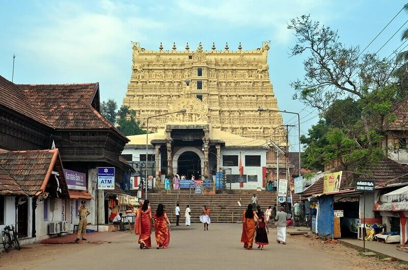

Sree Padmanabhaswamy Temple
The Sree Padmanabhaswamy Temple in Thiruvananthapuram, Kerala, is an architectural marvel and a spiritual haven. Dedicated to Lord Vishnu, the temple is a significant pilgrimage site and a symbol of the region's rich cultural heritage. The temple's distinctive feature is the awe-inspiring seven-tiered gopuram (entrance tower), adorned with intricate sculptures and carvings. The sanctum sanctorum houses a massive idol of Lord Padmanabha reclining on the serpent Anantha, emphasizing the divine cosmic aspect. The temple's inner sanctum is accessible only to Hindus, and devotees marvel at the opulent treasures discovered within its vaults during a historic inventory. With its timeless beauty, spiritual ambiance, and historical significance, Sree Padmanabhaswamy Temple stands as a testament to Kerala's cultural and religious legacy.
Kovalam
Kovalam Beach, nestled along the southwestern coast of Thiruvananthapuram, Kerala, is a tropical paradise that captivates travelers with its serene beauty. Divided into three crescent-shaped beaches, each offers a distinct atmosphere. Lighthouse Beach, named after the iconic Vizhinjam Lighthouse, is the most popular, providing panoramic views of the coastline. Hawah Beach boasts leisurely vibes and occasional fishermen's activities, while Samudra Beach offers a tranquil escape.
Visitors can engage in various water sports like surfing and parasailing or simply relax under swaying coconut palms, enjoying breathtaking sunsets. Kovalam also features beach-side cafes, Ayurvedic spas, and a vibrant local culture, creating a picturesque haven for those seeking sun, sand, and the soothing sounds of the sea.

Napier Museum and Zoo

Situated in the heart of Thiruvananthapuram, Kerala, the Napier Museum and Zoo together form a cultural and recreational hub. The Napier Museum, an architectural gem built in the 19th century, is named after Lord Napier, the erstwhile Governor of Madras. Its Indo-Saracenic style of architecture captivates visitors, and the museum houses an impressive collection of historical artifacts, ancient ornaments, and rare archaeological exhibits. Adjacent to the museum, the Thiruvananthapuram Zoo, one of the oldest in India, offers a fascinating journey into the animal kingdom. The zoo is home to a diverse range of wildlife, including lions, tigers, elephants, and exotic bird species. Both the museum and zoo are set amidst lush greenery, creating a delightful atmosphere for visitors to explore history, culture, and nature in one picturesque location. The combined experience of the Napier Museum and Zoo provides a well-rounded cultural and recreational adventure for tourists and locals alike.